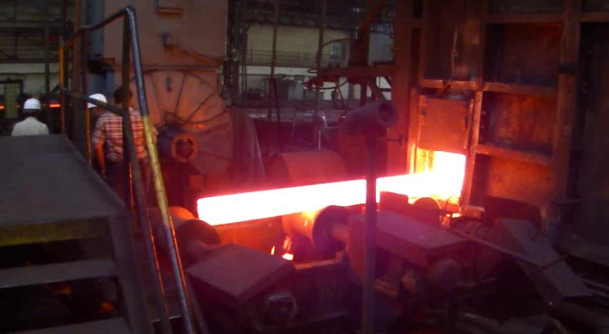
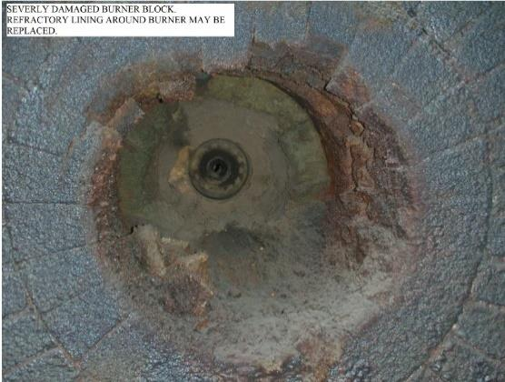
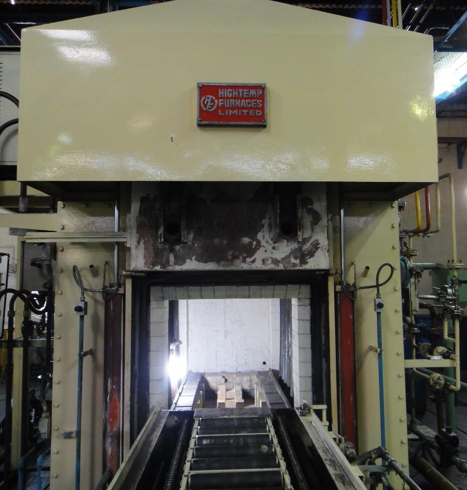
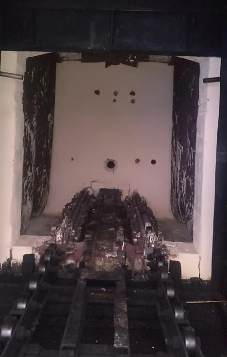

Abstract
This paper shows how significant savings in fuel consumption and reduced maintenance downtime can be achieved in furnace operations by adapting a technique developed by an Indian company. The technique is now popularly implemented in furnaces like BRFs (billet re-heating furnaces) and heat-treatment furnaces. The process involves improving thermal shock cracking resistance of refractory lining, emissivity enhancement, improved corrosion resistance and preventing carbon deposits on burner blocks.
Introduction
Hot rolling involves plastic deformation of heated metals and alloys into flat products (plates) or long products (wire rods, angles, channels, I sections, TMT bars, etc.). Some of the hot rolled products are heat treated. Hot forging is a similar process of heating ingots or billets and forming them into automotive or engineering parts. Most of the forged parts are heat treated.


In these important metal forming operations, refractory and fuel for the reheating furnaces and heat treatment furnaces are the major costs. Refractory lining consists of alumina bricks. Popular fuels are furnace oil, pulverized coal or gas. Electricity is used as fuel in the automotive parts heat treatment industry.
Any process or technique to reduce costs of fuel and refractory brick lining will automatically improve the profitability of the hot forming organisation. This article introduces a practical method of achieving these results. The technique is popularly used in hot rolling, hot forging and heat treatment industries. It can be implemented in all types of organisations, big and small.
Problems of Refractories
Refractory plays a major role in the fuel consumption and also in the maintenance of the furnace. Hence, it is important to know the problems of refractories. The following problems are encountered:
a) Thermal shock cracking
Thermal shock is caused by the exposure of refractory lining to rapid heating and cooling conditions which cause temperature gradients within the refractory bricks. Such gradients, in the case of uneven cooling or heating, may cause cracking. Thermal shock is unavoidable in furnace operation, however much care may be taken. Thermal shock cracks cause energy leaks through them. This loss may be as high as 33% of the total energy consumption. Thermal shock cracks lead to 'spalling' and reduced refractory lining life.
b) High thermal conductivity
Conductivity of alumina bricks increases as refractory lining wears out over time. This leads to increased furnace outer shell temperature over a period of time. Reduction in thermal conductivity will lead to retention of heat within the furnace.
c) Low emissivity
Refractory lining has a low emissivity of 0.2 and hence hampers furnace efficiency. Improving the emissivity value to 0.5 or more will prevent heat absorption by the refractory lining, leading to fuel saving. However, it is difficult to measure emissivity. Measuring thermal conductivity is easier.
d) Corrosive action
Furnace oil contains sulphur dioxide and vanadium pentoxide. These compounds corrode the refractory lining. This is one of the reasons why burner blocks wear out much faster.
e) Vicious sand blasting effect
The flame impinging on the refractory lining has a vicious effect of sand blasting. Combined with the corrosive effect, the flame damages the refractory lining and reduces its life span.
f) Carbon deposit on burner blocks

Unburnt carbon deposits on the burner blocks, and over a period of time, sufficient carbon build up takes place. Due to this build up, the flame geometry is impaired and heating efficiency is lowered. This problem is more pronounced when the fuel used is furnace oil. The operators try to remove these deposits by inserting metal rods from outside the furnace, near the burner, thereby damaging the burner block.
Effects Observed in Furnaces Due to Refractory Problems
Owing to the problems mentioned above, a number of adverse effects are observed in the furnace:
- Increased fuel consumption: Fuel consumption increases for achieving the same temperature and heating efficiency, after a time gap of say six months from the date of relining the furnace refractory. This is due to energy leaks from cracks due to thermal shocks and wearing out of the refractory lining.
- Increased furnace outer shell temperature: Conductivity of refractory lining and thermal shock cracking together contribute to increased temperature of the furnace outer shell, over a period of time.
- Formation of 'hot spots' on furnace outer shell: In some cases, only selective areas of the refractory get highly damaged from inside the furnace. As a result, the outer shell becomes very hot and at times, red hot. These are called hot spots.
- Rejections due to chipping of refractory lining and roof damage: Due to thermal shocks, the refractory lining begins to chip off or spall and fall off. This falling of refractory pieces may cause rejections of materials being heated or heat treated in furnace. Examples: Ceramic tiles and ceramic items being heated in furnaces get immediately rejected even if small refractory pieces fall on them. Refractory pieces may cause rejection of automotive parts being heat treated in a highly controlled environment.
- Non-uniformity of temperature leading to uneven heat treatment: In highly controlled heat treatment operations (like those in sealed quench furnaces), non-uniformity of heat by a few degrees leads to uneven heat treatment and the desired characteristics of parts are not achieved. This may lead to rejections.
- Furnace downtime for refractory repair or re-lining: For repair of refractory or for its relining due to damage, unplanned furnace shut down has to be implemented. This results in loss of production time and loss of energy in cooling and re-heating the furnace.
The ESPON Refractory Coating Solution
Steel Plant Specialties LLP, a Mumbai based firm, has developed a unique solution to overcome all the above problems. The entire refractory lining of the reheating furnace is coated with a special ESPON coating. This coating contains zircon, proprietary additives and binders, developed over many years of research. The coating was tested in reputed laboratories and then implemented on industry scale in the year 2005. Since then it has undergone a number of upgrades to make it the best version available today.
ESPON refractory coating is in paste form. It can withstand heat up to 1900°C. After attaining temperature of 200°C, the coating is slightly plastic in nature, thereby preventing cracks due to thermal shocks.
ESPON coating has very low thermal conductivity. It reflects the heat back into the furnace. A single coating of ESPON on refractory has proven to reduce thermal conductivity by approximately 11%. If two sides of refractory bricks are coated with ESPON, the thermal conductivity is further reduced substantially by up to 18%.
The two sides of refractory bricks to be coated are the hot face (side facing the heat inside the furnace) and the opposite side. However, it may not be practical to coat two sides of refractory bricks. Hence, the furnace shell is coated from inside, before laying the refractory lining. After laying the refractory lining, the hot face of bricks is coated with ESPON.
The coating procedure includes surface preparation, primer coating and final coating with ESPON, complete drying of coating and slow furnace firing. Step-by-step training is provided to the re-lining team by experienced technicians of SPS. Videos for each of these steps are also provided.
Industrial Case Studies
Some successful case studies of ESPON refractory coating in billet re-heating furnaces and heat treatment furnaces are presented below:
1. Billet Re-Heating Furnace: Reduced Fuel Consumption, Reduced Startup Time
A hot rolling mill producing 200 tons per day of structural steel has achieved significant savings in oil consumption. The reheating furnace is put off at 06.00 p.m. daily.
Results
Explanation: When the refractory lining is coated with ESPON, emissivity of refractory lining is increased and thermal conductivity is reduced. As a result, heat is retained within the furnace for a longer period of time, even after switching off the furnace.
Monetary Savings
2. Ingot Soaking Pit: Reduced Outer Shell Temperature, Fuel Savings
Temperature inside the ingot soaking pit reaches up to 1300°C. In this case, the outer shell temperature of the ingot soaking pit was as high as 130°C. Workmen found it difficult to operate nearby the furnace due to high temperature.
Results
3. Billet Re-Heating Furnace: Extended Refractory Lining Life
In a billet re-heating furnace of a TMT bars rolling mill, ESPON refractory coating was used with the aim of reducing furnace maintenance downtime.
Results
4. Annealing Muffle Furnace: Substantial Fuel Savings, ROI = 1 Month
In this organisation, annealing furnaces designed and supplied by Andritz, Germany, are used. Temperature is 1250°C. The fuel efficiency and refractory lining life are excellent. Furnace outer shell temperature is steadily maintained at 45°C. There are no problems faced in this furnace.
The only aim of using ESPON refractory coating in this furnace was to further reduce fuel consumption. Thermographic analysis was carried out before and after use of ESPON coating. Fuel consumption is recorded accurately as the furnaces have inbuilt software to monitor fuel efficiency.
Results
5. Sealed Quench Furnaces: Improved Heat Uniformity
In the heat treatment of automotive parts, uniformity of heat throughout the furnace is very important to achieve desired metallurgical characteristics in the parts being heat treated. Maximum temperature in sealed quench furnaces is 900°C.

In two esteemed Indian organisations manufacturing bearings and gears, very similar problems were faced: Temperature variation of more than 9°C in various zones of their sealed quench furnaces. Skin temperature of furnaces was much higher. Both sealed quench furnaces were coated with ESPON refractory coating.
Results
6. Continuous Gas Carburizing Furnace: 7% Fuel Saving, ROI = 1 Month
In this organization — one of the top 3 Indian tractor and passenger car manufacturers — the continuous carburizing heat treatment furnace relining was due. They were referred by their associates to try out ESPON refractory coating. Maximum temperature in continuous carburizing furnaces is 925°C.

Results
Visual Comparison: Before & After ESPON Coating
 Before coating
Before coating After ESPON
After ESPON Before coating
Before coating After ESPON
After ESPONSummary
1. Use of a special ESPON refractory coating holds high promises to any rolling mill, forge shop or heat treatment unit that is interested in reducing fuel consumption and increasing refractory lining life.
2. This technique is a proven method of achieving savings by reducing fuel consumption and reducing furnace maintenance issues.

S.P. Shenoy
A graduate of IIT Bombay with an M.Tech in Metallurgical Engineering and over four decades in applied metallurgy and surface engineering. He personally oversees product development, quality, and authors technical articles published on this site.